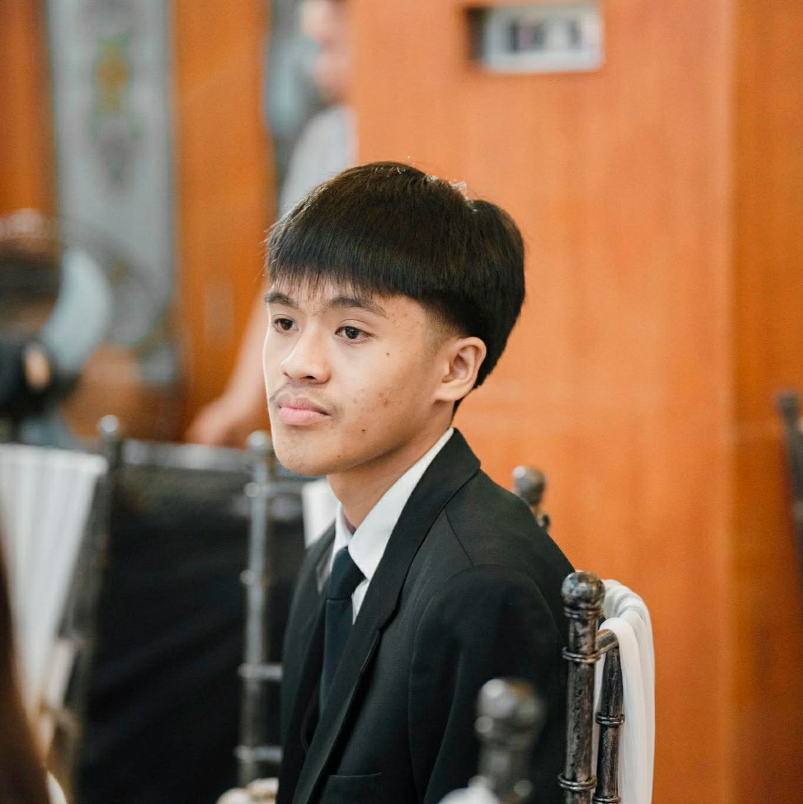
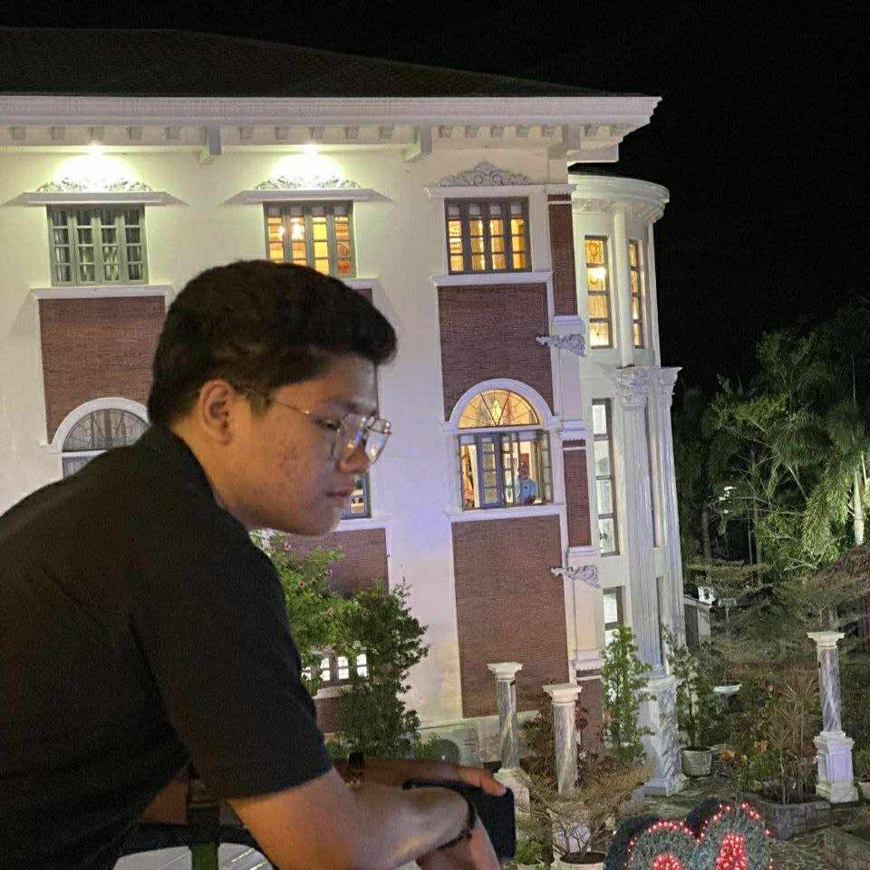

Welcome to LoreDrew's Website 😁
Created by two students of Bicol University College of Science


Hi, I'm Andrew Erestain, an 18-year-old BSIT student at Bicol University College of Science, who's passionate about technology and innovation. He enjoys exploring new skills and applying them in real-world projects. Andrew is driven to learn, grow, and contribute positively to the IT community.
Hi, I'm Lorielle Base, 18 years old, is a dedicated student at Bicol University College of Science pursuing a Bachelor of Science in Information Technology. Passionate about technology and learning new skills, Lorielle strives to apply knowledge in practical projects. Always eager to grow and explore innovative ideas, Lorielle aims to make a positive impact in the field of IT.
Skills:
Skills:
As an IT students, we aim to build strong technical competence and a deep understanding of modern technologies. We strive to uphold ethical standards and use our skills responsibly in every project we undertake. Our goal is to create innovative and meaningful solutions that address real-world challenges. Through continuous learning and hands-on experience, we prepare ourselves to adapt to the rapidly evolving digital landscape. Ultimately, we aspire to become professionals who contribute positively to technological progress and society.